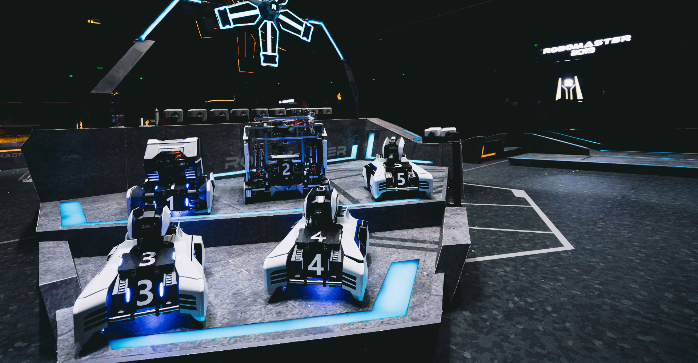

About CU Robotics
CU Robotics is a Recognized Student Organization (RSO) at the University of Colorado Boulder in Boulder, Colorado. Our primary mission is to foster an environment for students to design, build, program, and compete with industrial-grade robots at CU.
Our primary competition is Robomaster, an international robotics competition consisting of over 400 college teams from around the world. We design, build, test, and code our eight robots in the 9 months leading up to the competition. Robots range from aerial drones to fully autonomous sentries to attacking ground units, all of which are all mechanically and programatically complex. The competition is hosted by drone company DJI in Shenzen, China every July, and features all the teams from around the world.

Despite the incredible complexity of our robots, funding the team is our biggest challenge. CU Robotics' fundraising goal is $20,000 per year, about on par with a high-school FIRST robotics team. The majority of that money goes to purchasing robot parts & materials, but we also have travel and marketing budgets. We obtain most of our money from grants, in-kind support, and cash donations.